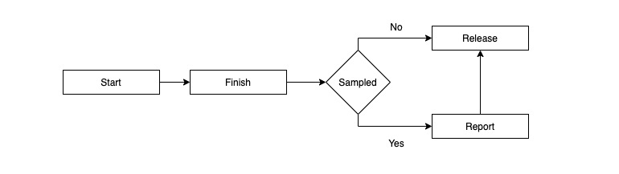

Jaeger 的 Go 客户端的源码导读
Jaeger Walkthrough 系列文章之一，旨在深入理解 Jaeger 项目内部的实现细节。本文介绍的是 Jaeger 的 Go 客户端，jaeger-client-go。
简介
jaeger-client-go 是 Jaeger 对 opentracing-go 标准接口的实现，主要解决的是两个问题：
- 如何在进程内部管理调用链追踪信息 (tracer, span)
- 如何在进程间传递调用链追踪信息 (span context, propagation)
但在调用链追踪实践中，jaeger-client-go 仅仅解决上述两个问题还不够，它还需要考虑的问题包括：
- 如何将数据上报到存储中心
- 如何对数据抽样，支持不同的抽样策略
- 需要收集哪些统计指标
接下来，我们就着源码对这些问题一一分析。
进程内调用链追踪信息管理
Tracer
Tracer 是 opentracing.Tracer 的实现，它负责与应用程序沟通，接收应用程序的请求，协调 jaeger-client-go 中各个模块完成相应工作。
opentracing.Tracer 中默认的 GlobalTracer 实现了所有接口的 noop 版本，应用程序直接调用不会有任何作用。应用程序想要接入 Jaeger，只需在启动时，初始化 Tracer：
cfg := jaegercfg.Configuration{}
tracer, closer, err := cfg.NewTracer()
// TODO: deal with err
defer closer.Close()
opentracing.SetGlobalTracer(tracer)
一切就能如魔法般正常地运转起来，对应用代码无侵入。
Span Allocator
Web 服务每收到一个请求，Tracer 就得在内部为其初始化一个结构体记录这个请求的一些调用链追踪信息，如开始时间、结束时间、操作名称、标签、日志等等，这个结构体就是 Span。
Web 服务的请求量很大，如果不能妥善回收利用 span，就有可能不断申请和回收内存，造成资源浪费。jaeger-client-go 基于 sync.Pool 来管理 span pool，以教科书的方式解决这个问题：
type syncPollSpanAllocator struct {
spanPool sync.Pool
}
func newSyncPollSpanAllocator() SpanAllocator {
return &syncPollSpanAllocator{
spanPool: sync.Pool{New: func() interface{} {
return &Span{}
}},
}
}
func (pool *syncPollSpanAllocator) Get() *Span {
return pool.spanPool.Get().(*Span)
}
func (pool *syncPollSpanAllocator) Put(span *Span) {
span.reset()
pool.spanPool.Put(span)
}
Span GC
span 的生命周期大体如下：

当应用开发者调用 span.Finish() 时，需要根据抽样策略判断该 span 信息是否需要采集，若是，则进入上报；若否，则直接释放。上报方式可分为同步和异步两种，为了在不同上报方式中做好 span GC，Span 采用了引用计数法，并定义了两个方法：
func (s *Span) Retain() *Span {
atomic.AddInt32(&s.referenceCounter, 1)
return s
}
func (s *Span) Release() {
if atomic.AddInt32(&s.referenceCounter, -1) == -1 {
s.tracer.spanAllocator.Put(s)
}
}
span 初始化时 referenceCounter 为 0，正常的 Finish 逻辑都会在最后调用 Release 方法，如果是异步上报，则 reporter 需要首先调用 Retain 方法，确保 span 不会被误回收。
Opentracing Observer
为了方便社区定制化开发插件，opentracing 社区在 opentracing-contrib/go-observer 中定义 OTObserver 实现，让开发者可以为 Span 提供回调函数：
- StartSpan：span 初始化时
- SetOperationName：span 设置 OperationName 时
- SetTag：span 设置标签时
- Finish：span 结束时
这一做法也被 jaeger-client-go 采用 (contrib_observer)。
进程间调用链追踪信息传递
Span Context
要追踪整个调用链，在远程调用时就需要将上下文信息传递到被调用进程，使得被调用方和被调方的数据能在上报时被准确地关联。span context 中存储的内容并没有在 opentracing 标准中规定，实现者可以自行决定。以下是 Jaeger 的 span context 结构体：
type SpanContext struct {
traceID TraceID
spanID SpanID
parentID SpanID
baggage map[string]string
debugID string
samplingState *samplingState
remote bool
}
traceID、spanID 以及 parentID 是 span context 的最核心数据，其中 traceID 用来关联整个调用链上单次访问的所有 span，spanID 与 parentID 用来关联不同的 span；baggage 中的数据类似于 golang 中的 context，只不过 baggage 中的数据能跨进程，golang 中的 context 只是用于单线程内部的追踪；debugID 用于绕过抽样策略，保证 trace 必采；samplingState 保存 trace 的抽样状态，理论上每个 trace 要么所有数据都采，要么都不采，采一部分没有意义，因此抽样状态需要往下传递；remote 仅用于标识 span context 是不是来自于远端进程，用于程序内部判断使用。
Propagation
在跨进程传递 span context 时，我们需要两样东西：propagator 与 carrier。propagator 负责序列化、反序列化 span context；carrier 则是数据的实际载体。
Propagator
每个 propagator 需要实现两个接口：Injector 和 Extractor：
type Injector interface {
Inject(ctx SpanContext, carrier interface{}) error
}
type Extractor interface {
Extract(carrier interface{}) (SpanContext, error)
}
opentracing 中定义了三种 propagator：BinaryPropagator、TextMapPropagator 与 HTTPHeaderPropagator，分别用于 span context 与二进制数据、文本字典数据以及 HTTP Header 数据之间的转换。其中 HTTPHeaderPropagator 用于 HTTP 进程间的数据编解码，而 BinaryPropagator 与 TextMapPropagator 用于 RPC 进程间的数据编解码。jaeger-client-go 在 propagation.go 中分别实现了它们。
数据上报
jaeger-client-go 中负责数据上报的模块是 Reporter，其接口定义如下：
type Reporter interface {
Report(span *Span)
Close()
}
在 Span GC 一节中，我们已经介绍过数据上报的两种方式以及相应的 GC 时间点，这里不再赘述。jaeger-client-go 共提供 5 种 Reporter，罗列如下：
| 名称 | 描述 |
|---|---|
| nullReporter | no-op reporter，用于占位，接口调用不执行任何操作 |
| loggingReporter | 将所有 span 打到给定的 Logger 中 |
| InMemoryReporter | 将所有 span 记录在内存中，用于测试 |
| compositeReporter | 同时使用多个 reporter |
| remoteReporter | 将所有 span 上报到远端进程，用于实际生产 |
接下来详细介绍一下 remote reporter。
Remote Reporter
remote reporter 的结构如下：
// reporter.go
type remoteReporter struct {
queueLength int64 // used to update metrics.Gauge
closed int64 // 0 - not closed, 1 - closed
reporterOptions
sender Transport
queue chan reporterQueueItem
reporterStats *reporterStats
}
type reporterOptions struct {
queueSize int
bufferFlushInterval time.Duration
logger log.DebugLogger
metrics *Metrics
}
remote reporter 在内部会维护一个队列，即一个 repoterQueueItem 类型的 channel，当应用调用 Report 方法时，就将 span 塞进队列，同时增加其引用计数保证其不被回收。另一侧，remote reporter 在初始化时会启动一个异步线程将队列中的 span 取出，并追加 (append) 到 sender 中。sender 实现了 Transport 接口：
// transport.go
type Transport interface {
Append(span *Span) (int, error)
Flush() (int, error)
io.Closer
}
其中 Append 会将 span 序列化并放入 sender 内部缓冲区，如果内部缓冲区长度超过限制，则 sender 会自动 Flush，并返回写出的 span 数量；如果未超出，则保留在缓冲区中。remote reporter 也会每隔一段时间强制调用 sender 的 Flush 方法，通过时间和数量两个维度来保证数据的准实时上报。
数据抽样
大型 web 服务的请求量通常很大，而实际开发者关心的调用链通常只是其中异常的少数，因此这里存在很低的信噪比：想保留越多的异常请求现场，就要保存越多的无用数据。提高信噪比是调用链追踪解决方案的核心设计目标。本节从抽样器接口和类型 (策略) 两个方面讨论数据抽样模块。
Sampler Interface
jaeger-client-go 中存在两个版本的 sampler interface：V1 和 V2。V1 的设计比较直接：
type Sampler interface {
IsSampled(id TraceID, operation string) (sampled bool, tags []Tag)
Close()
}
IsSampled 根据 traceID 和 operation 实施抽样策略，返回的 tags 用于在查询时回溯该 trace 是使用何种抽样策略；抽样策略可能会启动其它 goroutine 执行异步任务，Close 方法允许 Sampler 在关闭时停止这些异步任务。V1 的设计认为抽样决定仅在创建 span 时做出，且只做一次。但在实践中发现，是否抽样的决定有时候需要利用更多的、在创建 span 时还不存在的信息来判断，如标签信息、时长信息等等，于是有了 V2：
type SamplerV2 interface {
OnCreateSpan(span *Span) SamplingDecision
OnSetOperationName(span *Span, operationName string) SamplingDecision
OnSetTag(span *Span, key string, value interface{}) SamplingDecision
OnFinishSpan(span *Span) SamplingDecision
Close()
}
type SamplingDecision struct {
Sample bool
Retryable bool
Tags []Tag
}
这时，sampler 就能够支持通过标签强制采样这种很实用的特殊需求。
Sampler Types/Sampling Strategies
Jaeger 在其官方文档上已经介绍了其支持的采样策略，其对应的 sampler types 罗列如下：
| Sampler Type | Sampling Strategy |
|---|---|
| ConstSampler | 要么全抽，要么全不抽 |
| ProbabilisticSampler | 根据给定概率抽样 |
| RateLimitingSampler | 限定每秒钟最大的抽样数量，抽样的结果符合请求数量分布 |
| GuaranteedThroughputProbabilisticSampler | 在服务 (进程) 级别，根据给定概率抽样，同时保证在给定时间内有抽样数据 |
| PerOperationSampler | 在 operation 级别，根据给定概率抽样，同时保证在给定时间内有抽样数据 |
| RemotelyControlledSampler | 从远端动态拉取抽样策略，而非在启动时配置。支持拉取上述所有 sampler types 的配置 |
ConstSampler
ConstSampler 设计很简单，初始化时接收一个布尔值，表明是否抽样：
func NewConstSampler(decision bool) *ConstSampler {}
在决定是否抽样时，直接将给定的决定返回即可：
func (s *ConstSampler) IsSampled(id TraceID, operation string) (bool, []Tag) {
return s.Decision, s.tags
}
在请求量较少或者测试环境中，我们可以使用 ConstSampler 来全量抽样，方便测试。
ProbabilisticSampler
ProbabilisticSampler 实现地比较取巧，因为 traceID 是由两个 int64 随机数构成，假设概率为 $p$，直接判断 traceID 的其中一个 int64 随机数是否小于 $p \times maxRandomNumber$ 即可：
func (s *ProbabilisticSampler) init(samplingRate float64) *ProbabilisticSampler {
// ...
s.samplingBoundary = uint64(float64(maxRandomNumber) * s.samplingRate)
// ...
}
func (s *ProbabilisticSampler) IsSampled(id TraceID, operation string) (bool, []Tag) {
return s.samplingBoundary >= id.Low&maxRandomNumber, s.tags
}
RateLimitingSampler
RateLimitingSampler 利用基于借贷模型的漏桶算法，实现服务级别的限流，且支持动态调整漏桶滴水的速度，具体实现可访问 rate_limiter.go 进一步了解。
GuaranteedThroughputProbabilisticSampler
ProbabilisticSampler 的缺点在于，即便曾经出现过请求，但由于请求数量太少，可能造成没有抽样数据的问题，那么我们能否在请求数量较少的时候，保证最少数量的抽样数据？后者正好符合 RateLimitingSampler 的语义，将二者结合，就成了 GuaranteedThroughputProbabilisticSampler：
type GuaranteedThroughputProbabilisticSampler struct {
probabilisticSampler *ProbabilisticSampler
lowerBoundSampler *RateLimitingSampler
tags []Tag
samplingRate float64
lowerBound float64
}
判定是否抽样的逻辑是先用 ProbabilisticSampler 判断，如果是否，再通过 RateLimitingSampler 判断：
func (s *GuaranteedThroughputProbabilisticSampler) IsSampled(id TraceID, operation string) (bool, []Tag) {
if sampled, tags := s.probabilisticSampler.IsSampled(id, operation); sampled {
s.lowerBoundSampler.IsSampled(id, operation)
return true, tags
}
sampled, _ := s.lowerBoundSampler.IsSampled(id, operation)
return sampled, s.tags
}
PerOperationSampler
之前的所有 Sampler 都是针对服务进程级别做的抽样，这种做法的弊端在于：通常服务有很多个 operation (通常与接口一一对应)，每个 operation 的访问量差别很大，少数一两个 operation 承载着大部分流量，因此在服务进程级别上依靠概率或限流抽样，会使得流量少的 operation 缺乏抽样数据，流量多的 operation 抽样数据冗余。因此就需要 operation 级别的抽样策略，这就是 PerOperationSampler 的设计初衷：
type PerOperationSampler struct {
//...
samplers map[string]*GuaranteedThroughputProbabilisticSampler
//...
}
其原理并不复杂，就是针对每个 operation 都维护一个 GuaranteedThroughputProbabilisticSampler。
RemotelyControlledSampler
顾名思义，RemotelyControlledSampler 其实并不与某种抽样策略对应，它能通过外部配置中心获取配置，生成配置指定类型 Sampler，从而允许服务治理框架通过中心化配置调整各微服务调用链信息的抽样策略。
统计指标
在 metrics.go 中我们可以看到 jaeger-client-go 埋下的所有统计数据点，这里主要介绍与 trace、span、reporter 和 sampler 有关的统计数据点：
Trace
| 名称 | 含义 |
|---|---|
| TracesStartedSampled | 以当前 Tracer 为起点且被抽样的 trace 数量 |
| TracesStartedNotSampled | 以当前 Tracer 为起点且未被抽样的 trace 数量 |
| TracesStartedDelayedSampling | 以当前 Tracer 为起点且被推迟 (未在创建 span 时决定) 抽样的 trace 数量 |
| TracesJoinedSampled | 由外部 Tracer 为起点且被抽样的 trace 数量 |
| TracesJoinedNotSampled | 由外部 Tracer 为起点且未被抽样的 trace 数量 |
Span
| 名称 | 含义 |
|---|---|
| SpansStartedSampled | 以当前 Tracer 为起点且被抽样的 span 数量 |
| SpansStartedNotSampled | 以当前 Tracer 为起点且未被抽样的 span 数量 |
| SpansStartedDelayedSampling | 以当前 Tracer 为起点且被推迟 (未在创建时决定) 抽样的 span 数量 |
| SpansFinishedSampled | 在当前 Tracer 结束且被抽样的 span 数量 |
| SpansFinishedNotSampled | 在当前 Tracer 结束且未被抽样的 span 数量 |
| SpansFinishedDelayedSampling | 在当前 Tracer 结束且被推迟抽样的 span 数量 |
Reporter
| 名称 | 含义 |
|---|---|
| ReporterSuccess | 成功上报的 span 数量 |
| ReporterFailure | 由于 sender 错误上报失败的 span 数量 |
| ReporterDropped | 由于内部缓冲区队列过长导致上报失败的 span 数量 |
| ReporterQueueLength | 当前缓冲区队列的长度 |
Sampler
sampler 的埋点主要针对的是 RemoteControlledSampler：
| 名称 | 含义 |
|---|---|
| SamplerRetrieved | 获取抽样策略成功的次数 |
| SamplerQueryFailure | 获取抽样策略失败的次数 |
| SamplerUpdated | 抽样策略更新成功的次数 |
| SamplerUpdateFailure | 抽样策略更新失败的次数 |